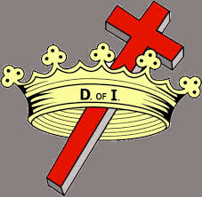

Community Service Ministries

Sisterhood of Catholic females, active in the Hays community.
Liturgical Ministries Information
Contact Susan Kisner, 785-625-7339
Alter Servers
Contact Susan Kisner, 785-625-7339
Extraordinary Minister of Holy Communion
Contact Susan Kisner, 785-625-7339
Perpetual Eucharistic Adorer
Contact Bob/Carol Feauto, 785-628-1429
Lector
Contact Bob/Carol Feauto, 785-628-1429
Extraordinary Minister of the Eucharist to Homebound Parishoners
Contact Sr. Loretta Flax, 785-625-7339
Money Count Team
Contact Susan Kisner, 785-625-7339
Sacristician
Contact Deacon Dave Kisner